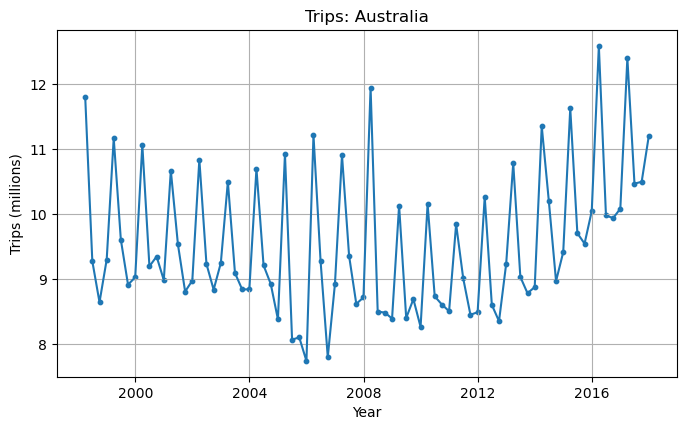

import pandas as pd
import matplotlib.pyplot as plt
import numpy as np
import statsmodels.api as sm
from statsmodels.tsa.holtwinters import ExponentialSmoothingProblem Set 04

Instructions: 1. Name: 1. Create a new ChatGPT chat called “SDS390 PS04” that contains all the prompts you used for this problem set. After you’ve completed your assignment, click the share button and paste the URL in Markdown format here (shared ChatGPT links don’t auto-update with subsequent queries).
Overview of this PS: You will be recreating graphs and explicitly computing values from “FPP 7 and 8 - The forecaster’s toolbox” in python.
Load and explore data
US Consumption
Load and wrangle the us_consumption data set, explore the raw values, and plot the time series in an informative fashion.
us_consumption = pd.read_csv("us_consumption.csv", parse_dates = ['Quarter'], index_col = 'Quarter')
# Needed to make exponential smoothing work - set frequency to quarter:
us_consumption = us_consumption.resample('Q').mean()
print(us_consumption.head())
print("\n")
print(us_consumption.tail()) Consumption Income Production Savings Unemployment
Quarter
1970-03-31 0.618566 1.044801 -2.452486 5.299014 0.9
1970-06-30 0.451984 1.225647 -0.551459 7.789894 0.5
1970-09-30 0.872872 1.585154 -0.358652 7.403984 0.5
1970-12-31 -0.271848 -0.239545 -2.185691 1.169898 0.7
1971-03-31 1.901345 1.975925 1.909764 3.535667 -0.1
Consumption Income Production Savings Unemployment
Quarter
2018-06-30 0.983112 0.661825 1.117424 -2.723974 0.0
2018-09-30 0.853181 0.806271 1.256722 -0.085686 -0.3
2018-12-31 0.356512 0.695142 0.948148 5.031337 0.2
2019-03-31 0.282885 1.100753 -0.488206 9.760287 -0.1
2019-06-30 1.113517 0.593399 -0.539949 -4.264616 -0.1us_consumption.plot(subplots = True)
plt.xlabel('Year')
plt.grid(True)
plt.show()Algeria Exports
Load and wrangle the Algeria economy data set, explore the raw values, and plot the time series in an informative fashion.
algeria_economy = pd.read_csv("algeria_economy.csv", parse_dates = ['Year'], index_col = 'Year')[['Exports']]
# Needed to make exponential smoothing work - set frequency to year:
algeria_economy = algeria_economy.resample('Y').mean()
print(algeria_economy.head())
print("\n")
print(algeria_economy.tail()) Exports
Year
1960-12-31 39.043173
1961-12-31 46.244557
1962-12-31 19.793873
1963-12-31 24.684682
1964-12-31 25.084059
Exports
Year
2013-12-31 33.209898
2014-12-31 30.219117
2015-12-31 23.171778
2016-12-31 20.860011
2017-12-31 22.638887plt.figure(figsize=(16/2, 9/2))
plt.plot(algeria_economy.index, algeria_economy['Exports'])
plt.scatter(algeria_economy.index, algeria_economy['Exports'], marker='o', s=10)
plt.xlabel('Year')
plt.ylabel('Percent of GDP')
plt.title('Exports: Algeria')
plt.grid(True)
plt.show()Australia Population
Load and wrangle the Australia economy data set, explore the raw values, and plot the time series in an informative fashion.
aus_population = pd.read_csv("aus_economy.csv", parse_dates = ['Year'], index_col = 'Year')[['Population']]
# Convert to millions:
aus_population.Population = aus_population.Population/pow(10,6)
# Needed to make exponential smoothing work - set frequency to year:
aus_population = aus_population.resample('Y').mean()
print(aus_population.head())
print("\n")
print(aus_population.tail()) Population
Year
1960-12-31 10276477.0
1961-12-31 10483000.0
1962-12-31 10742000.0
1963-12-31 10950000.0
1964-12-31 11167000.0
Population
Year
2013-12-31 23145901.0
2014-12-31 23504138.0
2015-12-31 23850784.0
2016-12-31 24210809.0
2017-12-31 24598933.0plt.figure(figsize=(16/2, 9/2))
plt.plot(aus_population.index, aus_population['Population'])
plt.scatter(aus_population.index, aus_population['Population'], marker='o', s=10)
plt.xlabel('Year')
plt.ylabel('Population (millions)')
plt.title('Population: Australia')
plt.grid(True)
plt.show()Australia Tourism
Load and wrangle the Australia Holidays data set, explore the raw values, and plot the time series in an informative fashion.
aus_holidays = pd.read_csv("aus_holidays.csv", parse_dates = ['Quarter'], index_col = 'Quarter')[['Trips']]
# Convert to thousands:
aus_holidays.Trips = aus_holidays.Trips/pow(10,6)
# Needed to make exponential smoothing work - set frequency to quarter:
aus_holidays = aus_holidays.resample('Q').mean()
print(aus_holidays.head())
print("\n")
print(aus_holidays.tail()) Trips
Quarter
1998-03-31 11.806038
1998-06-30 9.275662
1998-09-30 8.642489
1998-12-31 9.299524
1999-03-31 11.172027
Trips
Quarter
2016-12-31 10.084965
2017-03-31 12.406419
2017-06-30 10.471197
2017-09-30 10.499165
2017-12-31 11.210818plt.figure(figsize=(16/2, 9/2))
plt.plot(aus_holidays.index, aus_holidays['Trips'])
plt.scatter(aus_holidays.index, aus_holidays['Trips'], marker='o', s=10)
plt.xlabel('Year')
plt.ylabel('Trips (millions)')
plt.title('Trips: Australia')
plt.grid(True)
plt.show()
Time Series Regression Model
- FPP 7.2 - Simple exponential smoothing: Recreate Fig 7.6
# Fit the Simple Exponential Smoothing model
X = us_consumption[['Income', 'Production', 'Unemployment', 'Savings']]
y = us_consumption['Consumption']
## fit a OLS model with intercept on TV and Radio
X = sm.add_constant(X)
est = sm.OLS(y, X).fit()
plt.plot(us_consumption.index, us_consumption['Consumption'])
plt.plot(est.fittedvalues)
plt.xlabel('Quarter')
plt.ylabel('Percent change')
plt.title('Percent change in US consumption expenditure')
plt.show()Simple Exponential Smoothing
- FPP 8.1 - Simple exponential smoothing: Recreate Fig 8.2
- You only need to plot the forecasts into the future. The fitted values for observed time points is optional.
- Do the plot without forecasting/error bands as an MVP. Optional: include the forecasting/error bands.
# Fit the Simple Exponential Smoothing model
model = SimpleExpSmoothing(algeria_economy)
fitted_model = model.fit()
# Number of periods to forecast
forecast_periods = 5
forecast = fitted_model.forecast(steps=forecast_periods)
algeria_economy.plot()
forecast.plot()
plt.legend()
plt.show()Exponential smoothing with trend
- FPP 8.2 - Exponential smoothing with trend: Recreate Fig 8.4
- You only need to plot the forecasts into the future. The fitted values for observed time points is optional.
- Do the plot without forecasting/error bands as an MVP. Optional: include the forecasting/error bands.
- Optional: include a dampening effect (parameter \(\phi\) from Lec 12.1)
# Fit the Simple Exponential Smoothing model
model = ExponentialSmoothing(aus_economy, trend='add')
fitted_model = model.fit(method='L-BFGS-B')
forecast_periods = 10
forecast = fitted_model.forecast(steps=forecast_periods)
aus_economy.plot()
forecast.plot()
plt.legend()
plt.show()Exponential smoothing with seasonality
- FPP 8.3 - Exponential smoothing with seasonality: Recreate Fig 8.7
- You only need to plot the forecasts into the future. The fitted values for observed time points is optional.
- Include only the additive model
- Do the plot without forecasting/error bands as an MVP. Optional: include the forecasting/error bands.
model = ExponentialSmoothing(aus_holidays, trend='add', seasonal='add', seasonal_periods=4)
fitted_model = model.fit()
forecast_periods = 10
forecast = fitted_model.forecast(steps=forecast_periods)
aus_holidays.plot()
forecast.plot()
plt.legend()
plt.show()